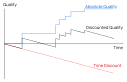

A defintion of artificial intelligence can fall under 4 categories:
| Thinking humanly | Thinking rationally |
| Thinking rationally | Acting rationally |
Acting Humanly
The Turing Test is a well known test for how well an AI performs. It suggests that if it is acting intelligently, it is thinking intelligently.
It also suggests that an AI requires knowledge, reasoning, learning (and language).
However the general consensus is that the Turing Test is not great, as many counterexamples and exploits can be found for it.
One such "counterexample" is Searle's Chinese Room.
Thinking Humanly
There is a field of study called cognitive modelling, which is modelling human thinking in programs. (We will however ignore this)
Thinking rationally
Given a premise/some premises, an agent (the AI model) must derive or deduce the solution via logic. Rational deduction however has problems dealing with uncertainty.
Acting Rationally
Acting rationally can be summed up as "doing the right thing", which is to say, the action that maximises some achievement metric. However, thought or inference in these actions is not necessarily involved.
In actuality, the boundaries between these four categories are quite blurred.
Specialised AI vs AGI
Rational Agents
Specifically, we look at Rational Agents.
These agents can be modelled as a function \(f:P \longrightarrow A\), where P denotes percept histories and A denotes actions.
Agents are typically required to exhibit autonomy, and seek the best performance possible. (Perfect rationality may not always be the best as there is a trade off with computing resources)
Agent Input Model
Above shows a diagram of what inputs an agent takes, and what it does.
Rational Agents
The Goals of a rational agent can be specified by a performance measure, which is a numerical value.
A rational action is an action which aims to maximise the performance measure, given the percept history to date.
Note that an agent is not onmiscient, clairvoyant (forseeing changes), nor always successful. The expected value, not the actual value, is considered - an action to maximise expected value which fails is still rational.
Dimensions of Complexity
The design space / considerations of an AI can be defined by a set of "dimensions of complexity".
| Dimension | Values |
|---|---|
| Modularity | Flat, modular, heirarchical |
| Planning Horizon | Static/none, finite (stage), indefinite, infinite |
| Representation | Flat state, features, relations |
| Computational Limits | Perfect or bounded rationality |
| Learning | Knowledge given or learned |
| Sensing Uncertainty | Fully or partially obervable |
| Effect Uncertainty | Deterministic, stochastic |
| Preference | Goals, complex preferences |
| Number of Agents | Single, multiple |
| Interaction | Offline, online |
Modularity
Modularity concerns the structure and abstraction.
Planning Horizon
Planning Horizon concerns how the world is, and how far forward does the agent plan to.
Representation
Finding compact Representations and exploiting them for computational gains. An AI can reason in
Computational Limits
Computational Limits:
Learning from Experience
Learning from Experience:
Uncertainty
Uncertainty has two dimensions: sensing and effect. In each, an agent can have:
Sensing Uncertainty
Sensing Uncertainty is about what the agent can sense about state, the state can be
Effect Uncertainty
Effect Uncertainty concerns whether an agent could predict an outcome from a state and an action.
Preferences
Preferences concerns what an agent tries to achieve.
Number of Agents
Crucially, Number of reasoning agents.
Interaction
Interaction talks about when the agent reasons relating to its action
Examples
Some examples of the dimensions of different agents
| Dimension | Values |
|---|---|
| Modularity | Flat |
| Planning Horizon | indefinite |
| Representation | Flat state |
| Computational Limits | Perfect rationality |
| Learning | Knowledge given |
| Sensing Uncertainty | Fully obervable |
| Effect Uncertainty | Deterministic |
| Preference | Goals |
| Number of Agents | Single |
| Interaction | Offline |
| Dimension | Values |
|---|---|
| Modularity | Flat |
| Planning Horizon | indefinite, infinite |
| Representation | features |
| Computational Limits | Perfect rationality |
| Learning | Knowledge learned |
| Sensing Uncertainty | Fully obervable |
| Effect Uncertainty | Stochastic |
| Preference | complex preferences |
| Number of Agents | Single |
| Interaction | online |
| Dimension | Values |
|---|---|
| Modularity | heirarchical |
| Planning Horizon | indefinite, infinite |
| Representation | relations |
| Computational Limits | bounded rationality |
| Learning | Knowledge learned |
| Sensing Uncertainty | partially obervable |
| Effect Uncertainty | stochastic |
| Preference | complex preferences |
| Number of Agents | multiple |
| Interaction | online |
Complex interaction
Dimensions intract and combine in complex ways. Partial observability makes multi-agent and indefinite stage more complex, and with modularity you can have fully or partially observcable modules. Heirarchical reasoning, Individuals and relations, and bounded rationality make reasoning simpler.
Representations
A task can be represented in a formal way, from which we can make formal deductions and interpret them to get our solution.
We want a representation complex enough to solve the problem, to be as close to the problem as possible, but also compact, natural, and maintainable.
We want it to be amenable to computation, thus
(1) Can express features which can be exploited for computational gain
(1) Can tradeoff between accuracy and time/space complexity
And able to acquire data from people, datasets, and past experiences.
Defining a Solution
Given informal description of problem, what is the solution? Much is usually unspecified, but they cannot be arbitrarily filled.
Much work in AI is for common-sense reasoning, the agent needs to make common sense deductions about unstated assumptions.
Quality of Solutions
Solutions can be split into classes of quality
Descisions and Outcomes
Good descisions can have bad outcomes (and vice versa). Information can lead to better descisions, known as value of information.
We can often tradeoff computation time and complexity: an anytime algorithm can provide a solution at any time, but more time can lead to better answer.
An agent is also concerned with acquiring appropriate information, timely computation, besides finding the right answer.
We can often use a quality over time graph with a time discount to represent this.
Choosing a Representation
Problem \(\longrightarrow\) specificiation of problem \(\longrightarrow\) appropriate computation.
We need to choose a representation, this can be done as a high level formal/natural specificaiton, down to programming languages, assembly, etc, etc.
Physical Symbol Hypothesis
We define a Symbol as a meaninigful physical pattern that can be manipulated (like logic symbols)
A Symbol system creates, copies, modifies, and deletes symbols.
The Physical symbol hypothesis states that a physical symb. system is necessary and sufficient for general intelligent action
Knowledge and Symbol Levels
Two levels of abstraction common amongst systems:
Mapping problem to representation
We have a few questions to ask
Choosing Level of Abstraction
A high level description is easier for human understanding. A lower level abstraction however can be more accurate, predictive, however are harder to reason, specify, understand. One may not know all details for a low level description. Many cases lead to multipe levels of abstraction.
Reasoning and Acting
Reasoning is computation required to determine what action to do.
Problem Solving
Often we are only given the specification for a solution, and have to search for it. A typical situation is where we have an agent in one state, and have a set of deterministic actions with which it will go towards the goal state.
Often this can be abstrated into finding the goal state in a directed graph of linked states.
Example
Suppose you're in Coventry and want to get to London. How do you achieve this?
Using what transport do you get there? What routes do you go via? More importantly, which routes are reasonable?
Finding the actions that would get you from Coventry to London is problem solving.
A problem-solving agent is a goal-based agent that will determine sequences of actions leading to desirable states. It must in this process determine which states are reasonable to go through.
Problem solving steps
There are 4 steps：
For our example from earlier:
Pseudocode agent
We can make a mockup of an offline reasoning agent in pseudocode.
Naturally all the functions mentioned are left as an excersise to the reader (i.e. assumed implemented).
formulateGoal internally will use its current perceptions.
Problem types
Problems of course can come in many types.
Vacuum Cleaner World
Let's use an example of a simple environment, a vacuum robot V and a world with two locations, [ ][ ]. Each location may also contain dirt ([ d] or [Vd] for vacuum and dirt). The vacuum can move left or right, and suck dirt.
Single state. Suppose we know we are in the state [V][d]. We then know our sequence of actions is just [right, suck].
Multiple State. (sensorless / conformant) Suppose we don't know which state we start in. We could have the states:
1. [Vd][ d] |
2. [ d][Vd] |
3. [Vd][ ] |
4. [ d][V ] |
5. [V ][ d] |
6. [ ][Vd] |
7. [V ][ ] |
8. [ ][V ] |
Contingency. Suppose we start in state [V ][ d], but our vacuum has received a downgrade: if we suck a clean square, there is a chance that it may make that square less clean. So what do we do?
What we can is sense whilst acting, thus: [right, if dirt then suck].
State space problems
A State space problem consists of a set of states; subsets of start states, goal states; a set of actions; an action function (f(state, action) -> new state); and a criterion that specifies the quality of an acceptable solution (depends on problem).
Since the real world is complex, state space may require abstraction for problem solving. States, operators, and solutions approximate the real world equivalent, though one must take care that their operations are still valid for the real world counterpart.
8-puzzle
A 3\(\times\)3 grid of tiles numbered 1 to 8, with a blank space for sliding. We want to get from some initial state to some goal state.
283 123
164 8_4
7_5 765State Space Graphs
A general formultion for a problem is a state space graph. It is:
Tree searching algorithms
A tree search is a basic approach to problem solving. It is an offline, simulated exploration of the state space. Starting with a start state, we expand an explored state by generating / exploring its successor branches, to build a search tree.
We have a single start state, and repeatedly expand until we find a solution, or run out of valid candidates.
Implementation details
A state represents a physical configuration of a puzzle, and a node will be the data structure for one state of the tree.
A node stores the state, parent, children, depth, path cost - the last of these is usually denoted \(g\).
Nodes (explored) but not yet expanded are called the frontier, and is generally represented as a queue.
Search strategies
The strategy of searching is defined by which order we expand nodes in. These strategies are evaluated over several criteria:
Simple, uninformed strategies
Uninformed search only uses information given in problem definiton - we have no measure of which nodes would be better to expand to, nor do we really check the nodes once we've explored them (i.e. not checking cycles).
Two of these algorithms are Breadth-first search BFS and Depth-first search DFS.
Breadth first
BFS expands the shallowest node: put recently expanded successors at the end of queue: FIFO.
The main problem for BFS is the space usage, which can balloon very very quickly (with \(b = 10\) and 1 KB per node, at depth 8 one needs around 1 TB of memory).
Depth first
DFS expands the deepest node: put most recently expanded successors at the start of the "queue" (stack): LIFO.
Notes
This section is uninformed search, and graph searches are similarly uninformed, so much so that the algorithms presented do not even check for cycles, despite common intuition.
The main difference is that in graph search we look at paths, rather than nodes. Expanding into a node would be adding it to the stored path.
Graphs
With trees, if we have looped states these will just branch out to infinity. Graphs are a good way to take loops into account and are a practical representation of such spaces.
Similar to a tree, we incrementally explore, maintaining a frontier of explored paths. The frontier should expand into unexplored nodes until a goal node is encountered.
The way nodes are selected is the search strategy, the neighbours of (all) nodes define a graph, and the goal defines the solution.
We can continue searching from the return call even if a solution has been found, if we want more or all possible solutions.
BFS on Graphs
All paths on the frontier \([p_1 .. p_r]\) are expanded one by one, and the neighbours of an explored path are added to the end of the frontier.
The time complexity is instead written \(O(b^n)\), where \(n\) is the path length (instead of tree depth).
DFS on Graphs
DFS treats the frontier as a stack instead. The time complexity is \(O(b^k)\) where \(k\) is the maximum number of arcs a path can have (i.e. max depth). Space complexity is linear: \(O(k + (b-1))\).
Now, DFS is said to fail on both infinitely long graphs and graphs with cycles, although I'm not sure why you're adding already explored nodes to the frontier (cycle case).
Lowest cost first
Sometimes, there are costs, or weights, associated with edges. The cost of a path is thus the sum of the cost of edges, and an optimal solution has the path with the smallest total cost.
Lowest cost first is a fairly naive algorithm that simply selects the path on the frontier with the lowest cost. I.e., frontier paths are stored in a priority queue according to path length.
Lowest cost is complete.
Supposedly none of these algorithms will halt on a finite graph with cycles, but one has to be a particular type of person to program a graph search without cycle checking / not adding explored nodes to the unexplored frontier.
Overview
Uninformed search is inefficient, especially when we have extra information we can exploit. By using problem-specific knowledge, we can improve our searching - this is informed search.
Still offline.
Overview
If you know where the goal is, when selecting paths do not ignore it.
Employ the use of an extra heuristic measurement \(h(n)\) - an estimate of the remaining cost to the goal.
This heuristic should be efficient to compute, and always be an underestimate (no path to goal strictly less than \(h(n)\)). If a heuristic meets these criteria, then it is admissible.
Examples
If one is on a euclidean plane finding the shortest path, \(h(n)\) can be the straight-line distance to the goal. If the cost is time, \(h(n)\) can be straight-line distance divided by max speed.
We can think of this as reducing the constraints in the problem to an easier representation that we can quickly calculate an answer for. The straight-line distance does not count obstacles, for example.
Best First Search
When we choose nodes to expand in a frontier, the heuristic can determine the order / rank of the frontier structure.
Heuristic DFS is where we select a neighbour such that the best neighbour is selected first.
If by best we mean closest (by some metric) distance to the goal, then we have Greedy Best First Search (BFS).
The frontier is a priority queue ordered by \(h(n)\).
Problems
Some graphs are very much not good for BFS. Especially if we do not track cycles.